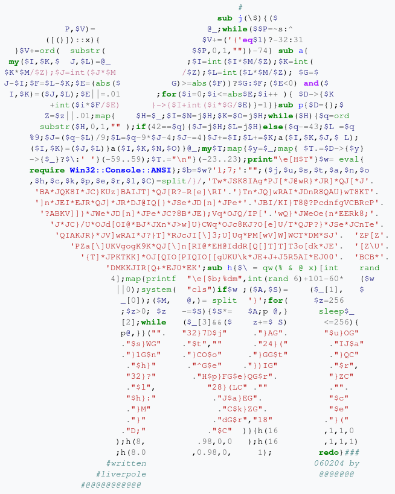

Syndis
Halloween Pubquiz
Answers
Question 1
What does the acronym VIM stand for?
Vi IMproved
Question 2
What is the Italian name for this type of pasta?
Fusilli
Question 3
Which famous dessert is made using only cream, sugar, vanilla and gelatine?
Panna cotta
Question 4
Everyone loves the song, of course, but what does the word 'despacito' mean?
Slowly
Question 5
What is measured on the Scoville scaling?
Heat/spiciness
Question 6
What is the output of this program?
Just another PERL hacker
Question 7
Who was the genetic template for The Clone Army of The Republic in Star Wars?
Jango Fett
Question 8
Which movies do these quotes come from?
Question 8a
Sneakers
Question 8b
Office Space
Question 8c
Ford Fairlane
Question 8d
Scarface
Question 9
From which TV shows do these theme songs come?
Question 9a
Jeeves and Wooster
Question 9b
King of Queens
Question 9c
Angel
Question 9d
Stark Raving Mad
Question 9e
Monk
Question 9f
Brooklyn Nine-Nine
Question 9g
ER
Question 9h
Star Trek - Deep Space Nine
Question 10
Who wrote and originally performed these cover songs?
Question 10a
Bob Dylan
Question 10b
Robyn
Question 10c
Leonard Cohen
Question 10d
Tom Waits
Question 11
What do these logos represent?
Question 11a
PortSwigger
Question 11b

WinRAR
Question 11c

The Rebel Alliance
Question 11d

Aperture Laboratories
Question 11e
Marmot
Question 11f
Miðflokkurinn
Question 11g

Vue.js
Question 11h
DC++
Question 12
What were these pets called that appeared in TV shows and movies?
Question 12a
Eddie
Question 12b
Marcel
Question 12c
Beethoven
Question 12d
Mr. Whiskerson
Question 12e
Gizmo
Question 12f

Hedwig
Question 12g
Paul Anka
Question 12h

Momo
Question 12i
Mushu